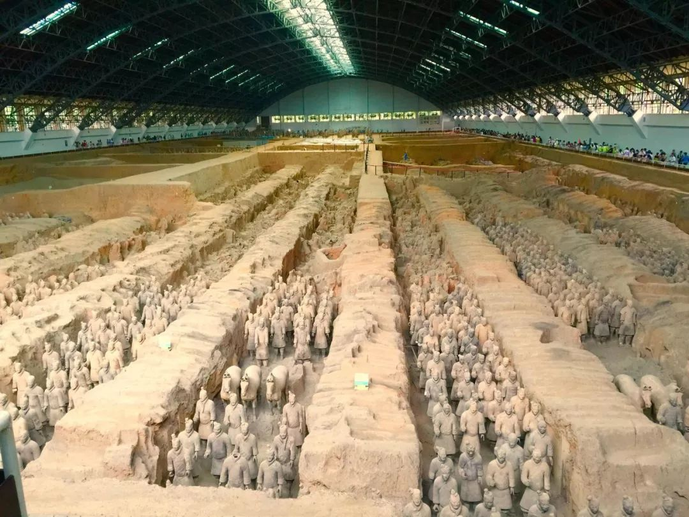
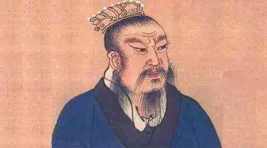
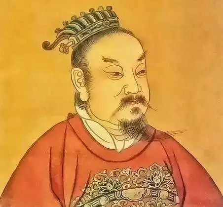
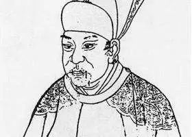
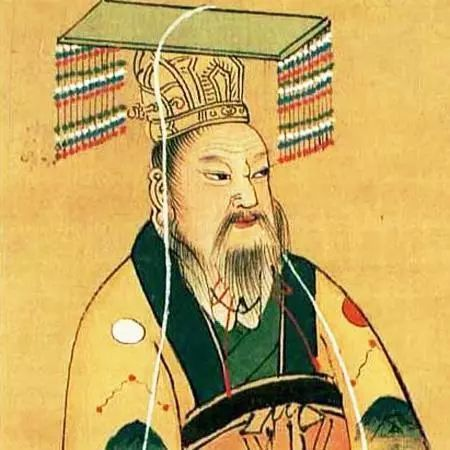
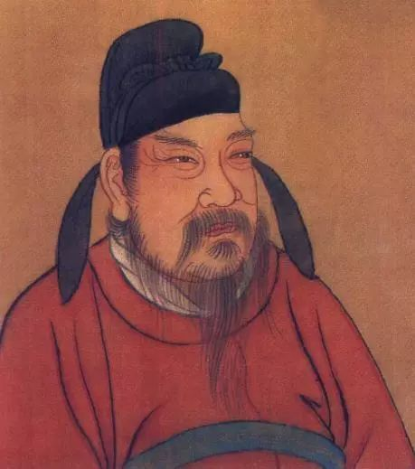

十三朝
我在碑林落笔一纸文墨半城香
写了一块秦砖又拓下一片盛唐
几千年故事太长用史记话家常
从八水取出一瓢酿成那百家无双
写了一块秦砖又拓下一片盛唐
几千年故事太长用史记话家常
从八水取出一瓢酿成那百家无双
秦
（公元前221年－公元前207年）

秦
秦国原为周朝的一个诸侯国，到秦始皇继位后，于公元前230年到前221年先后攻灭关东六国，完成华夏大一统
秦朝创立帝制及以三公九卿为代表的中央官制，废除分封制代以郡县制，彻底打破自西周以来的世卿世禄制度
西 汉
（公元前202年—8年12月）

西 汉
是中国历史上继秦朝之后的大一统王朝，史称前汉，与东汉统称为汉朝。
秦末，天下揭竿而起，经过楚汉之争，刘邦击败项羽，公元前202年刘邦称帝，以“汉”为国号，定都长安（今汉长安城遗址），史称西汉。
东 汉
（25年—220年）

东 汉
东汉是中国历史上继秦朝、西汉、新朝之后的大一统王朝。
新莽末年爆发绿林赤眉起义，汉朝宗室出身的刘秀趁势而起。汉明帝和汉章帝在位期间，东汉进入全盛时期，史称明章之治 。
前 秦
（350年—394年）
前 秦
前秦是中国历史上第一个统一北方的非汉民族政权，也是东晋十六国时期的政权之一。
氐族将领苻洪在石虎去世后投降东晋，在后赵内讧时意图夺下关中，但遭人毒死。352年苻健称帝，定都长安（今西安汉长安城遗址），与东晋断绝。因其所据为战国时秦国故地，故以此立国号。
西 魏
（535年―556年）

西 魏
西魏，中国南北朝时期由北魏分裂出来的割据政权。由宇文泰拥立魏孝文帝的孙子元宝炬为帝，国号“大魏”与高欢所掌控的东魏、南梁对立，建都长安，政权实由宇文泰掌握。
隋 朝
（581年－618年）

隋 朝
隋朝是中国历史上承南北朝下启唐朝的大一统王朝。
大定元年（581年）二月，北周静帝禅让帝位于杨坚，杨坚定国号为“隋”，定都大兴城。随后统一中国，结束了自西晋末年以来长达近300年的分裂局面。
唐
（618年—907年）

唐
唐朝，是继隋朝之后的大一统王朝，共历二十一帝。隋末天下群雄并起，617年，唐国公李渊晋阳起兵，618年于长安称帝建立唐朝，因皇室姓李，故又称为李唐。
唐代科技、文化、经济、艺术具有多元化特点 ，唐朝文化兼容并蓄，接纳海内外各国民族进行交流学习，形成开放的国际文化 ，声誉远扬海外。

重新阅览
请点击下面的按钮~